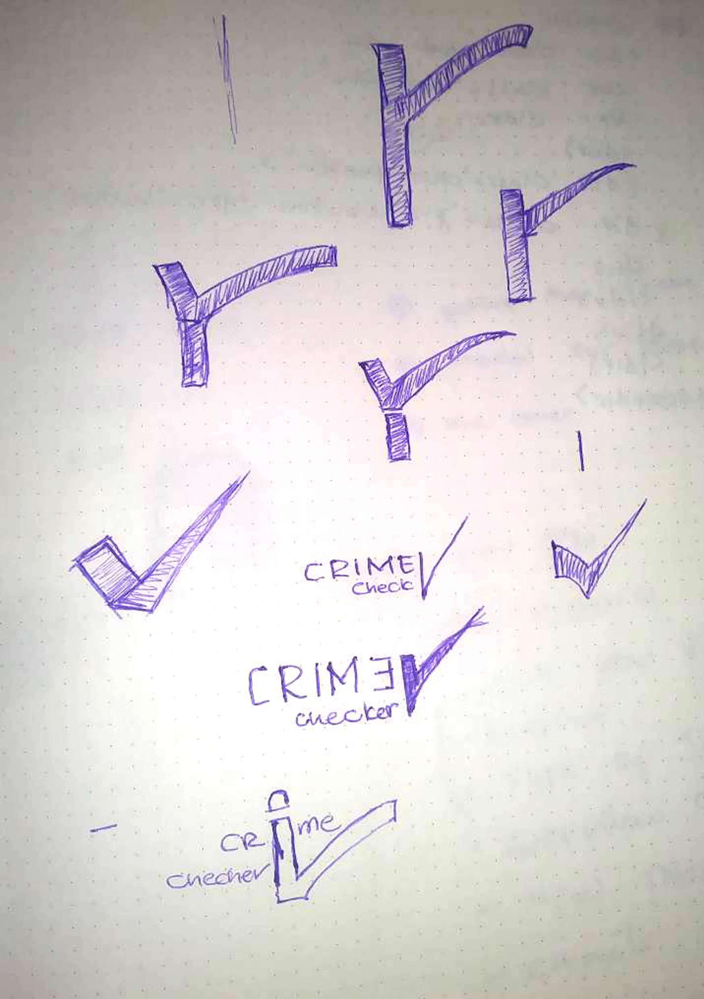
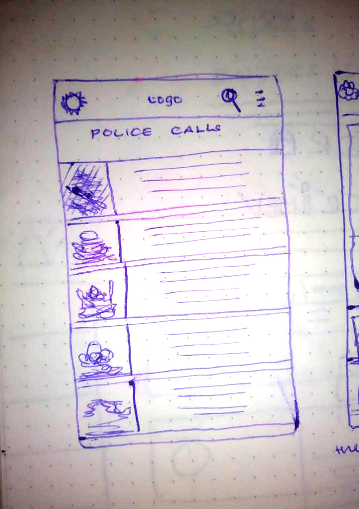
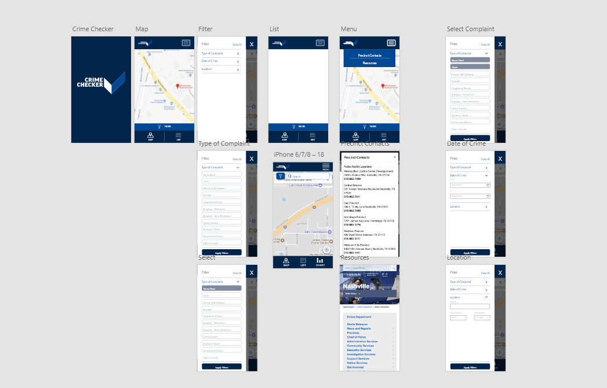

<<<<<<< HEAD
Together we make a difference for the community

Overview
There are other crime applications available, but
Crime Checker shows actual police call logs so users can see where potential
crimes are being reported in their neighborhood. 0ur MVP was to display
an interactive map of potential crimes reported this year with search
and filter functionality and provide easy access to contact information for
their local police precinct.
Tools
ReactJS, Mobile First, Google API, Reactstrap, StyleGuidist
Timeline
March 18, 2018 | March 24, 2018
Background
Lead instructor, Brenda Long, was inspired by the recent Hack For The Community event to
create a project for students to design, build, and pitch a product using Nashville’s Open Data.
She shared, “Not only does cohort 24 focus on front-end technologies, but also soft skills related to UI and UX - research, product design/ideas, communication, storytelling, prototyping, and presentation skills.
Thus came Perfect Pitch.
Teams collaborated on initial ideas, developed prototypes, and presented
products to the class. The class chose three to develop into working apps.”
With a week to build an app and perfect their pitch, their
objectives for this project included:
Work as a team
Access real data
Build an app that is relevant and helpful to the Nashville community
Develop the app with React (component based)
Define style guide requirements
The app should be user-focused
Test prototypes with users
Practice presentation techniques
The panel was given several criteria to judge and a point system. The process
gave students an opportunity to hear real feedback from members of the community that
champion Nashville’s open data.
Challenge Statement
How might we …
Present the information from the Nashville Police Call Logs API in a way
that helps Nashville residents stay more informed and up to date on
potential crimes happening in their area?
Users
Parents concerned for the safety of their family
Tourists looking for places to stay during their visit
People looking a place live (Real estate)
People that are single, live alone
People that active in the neighborhood what
Persona
Neighborhood Watch Dad
Primary User
A husband and father who is interested in staying informed on crime in the
area in order to protect his family from any possible dangers.
Single Woman
Secondary User
Not overly concerned with crime but does want to know if her immediate areas of
home and work are safe or if there is any incidents she should be aware of.
Required Features
Interactive Map View
List View
Search/ Filter
Additional Info
Sketches
From the above user research data collections and our defined required
features, we created our sketches for the low-fidelity prototype.
In this stage’s sketches, we mainly focused on the homepage, the search
result page, the course detail page, and the user profile page. Sketches
helped us to express and exchange ideas between group members and formed
the design of our website.
Usability Test
From the above user research data collections and our defined required
features, we created our sketches for the low-fidelity prototype.
In this stage’s sketches, we mainly focused on the homepage, the search
result page, the course detail page, and the user profile page. Sketches
helped us to express and exchange ideas between group members and formed
the design of our website.
© All right Reversed:
MillionInfinity
=======
Crime-Checker
Together we make a difference for the community.
Hack for the community
Overview
There are other crime applications available, but Crime Checker shows actual police call logs so users can see where
potential crimes are being reported in their neighborhood. 0ur MVP was to display an interactive map of potential
crimes reported this year with search and filter functionality and provide easy access to contact information for
their local police precinct.
Tools
ReactJS, Mobile First, Google API, Reactstrap, StyleGuidist
Timeline
March 18, 2018 | March 24, 2018
My Contribution
Design and Develop
Link
Crime Checker
Background
Lead instructor, Brenda Long, was inspired by the recent Hack For The Community event to create a project for students
to design, build, and pitch a product using
Nashville’s Open Data.
She shared, “Not only does cohort 24 focus on front-end technologies, but also soft skills related to UI and UX - research,
product design/ideas, communication, storytelling, prototyping, and presentation skills. Thus came Perfect Pitch.
Teams collaborated on initial ideas, developed prototypes, and presented products to the class. The class chose three to
develop into working apps.”
With a week to build an app and perfect their pitch, their objectives for this project included:
Work as a team
Access real data
Build an app that is relevant and helpful to the Nashville community
Develop the app with React (component based)
Define style guide requirements
The app should be user-focused
Test prototypes with users
Practice presentation techniques
The panel was given several criteria to judge and a point system. The process gave students an opportunity to hear real feedback
from members of the community that champion Nashville’s open data.
Initial Concept
Challenge Statement
"How might... Present the information from the Nashville Police Call Logs API in a way that helps Nashville
residents stay more informed and up to date on potential crimes happening in their area?
Insight
Based on my previous experience I have observed my nieces’ and nephew struggling to keep track of their personal books
and borrowed books
User
Parents concerned for the safety of their family.
Tourists looking for places to stay during their visit.
People looking a place live (Real estate).
People that are single, live alone.
People that active in the neighborhood what.
Interview Findings
Activity
They need to have private reading time
Sign up morethan one user
Sign up morethan one user
Schedule accourding to thier favorite
Group reading
Environments
Vanilia js , bootstrap, grunt, npm , jquery, sass, Firebase
Competition
Ebook Reade
Kindle
Bookari
Persona
-Neighborhood Watch Dad
Primary User
A husband and father who is interested in staying informed on crime in the area in order to protect his family from
any possible dangers.
-Single Woman
Secondary User
Not overly concerned with crime but does want to know if her immediate areas of home and work are safe or if there
is any incidents she should be aware of.
Sketches
From the above user research data collections and our defined required features, we created our sketches for the low-fidelity
prototype. In this stage’s sketches, we mainly focused on the homepage, the search result page, the course detail
page, and the user profile page. Sketches helped us to express and exchange ideas between group members and formed
the design of our website.


Prototype
High-fidelity Prototype
From the above user research data collections and our defined required features, we created our sketches for the low-fidelity
prototype. In this stage’s sketches, we mainly focused on the homepage, the search result page, the course detail
page, and the user profile page. Sketches helped us to express and exchange ideas between group members and formed
the design of our website.

×

Required Features
Interactive Map View
List View
Search/ Filter
Additional Info
Usability Testing
From the above user research data collections and our defined required features, we created our sketches for the low-fidelity
prototype. In this stage’s sketches, we mainly focused on the homepage, the search result page, the course detail
page, and the user profile page. Sketches helped us to express and exchange ideas between group members and formed
the design of our website.
×

Lesson Learned
Going through the whole process, the lesson I learned from this project is:-
Plan out code plan thoroughly before coding
Plan all components and determine which will have state
Put state in the topmost component that will need it.
Communicate what you are working on. Constantly.
>>>>>>> master